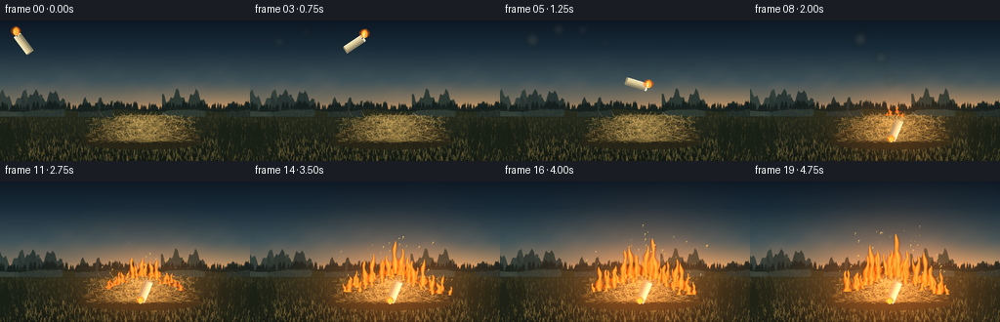
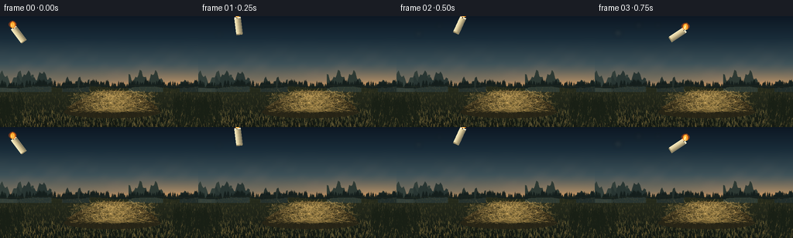

CODING AGENTS AS PIXEL WORLD MODELS
traex/DeepSeek-V4.1-Flash · phygen_144
点击播放 · 原生 RGB 像素
逐轮保存的候选
回放视频、检查图与代码变化。
每份候选均可单独播放。实际图片检查记录在下方工具轨迹中。
候选 01播放与检查图
点击播放 · 原生 RGB 像素

展开代码变化
--- 上一保存版本
+++ 本次保存版本
@@ -0,0 +1,591 @@
+"""Procedural PixelWorld renderer for a candle igniting a pile of dry grass."""
+
+from __future__ import annotations
+
+import math
+from pathlib import Path
+
+import numpy as np
+from PIL import Image, ImageDraw, ImageFilter
+
+import artifact_io
+
+
+CASE_DIR = Path(__file__).resolve().parent
+WIDTH = 256
+HEIGHT = 144
+SCALE = 2
+FW = WIDTH * SCALE
+FH = HEIGHT * SCALE
+FRAMES = 20
+FPS = 4.0
+HORIZON = 91.0
+PILE_CENTER = (149.0, 111.0)
+IMPACT_FRAME = 7
+
+
+def clamp(value: float, low: float = 0.0, high: float = 1.0) -> float:
+ return max(low, min(high, value))
+
+
+def smoothstep(edge0: float, edge1: float, value: float) -> float:
+ t = clamp((value - edge0) / max(1e-6, edge1 - edge0))
+ return t * t * (3.0 - 2.0 * t)
+
+
+def mix_color(a: tuple[int, int, int], b: tuple[int, int, int], t: float) -> tuple[int, int, int]:
+ return tuple(round(a[i] + (b[i] - a[i]) * t) for i in range(3))
+
+
+def srgb_gradient(height: int, stops: list[tuple[float, tuple[int, int, int]]]) -> np.ndarray:
+ ys = np.linspace(0.0, 1.0, height, dtype=np.float32)
+ out = np.zeros((height, 3), dtype=np.float32)
+ for index in range(len(stops) - 1):
+ p0, c0 = stops[index]
+ p1, c1 = stops[index + 1]
+ mask = (ys >= p0) & (ys <= p1)
+ t = ((ys[mask] - p0) / max(1e-6, p1 - p0))[:, None]
+ out[mask] = np.array(c0, dtype=np.float32) * (1.0 - t) + np.array(c1, dtype=np.float32) * t
+ out[ys < stops[0][0]] = stops[0][1]
+ out[ys > stops[-1][0]] = stops[-1][1]
+ return out
+
+
+def add_noise_field(array: np.ndarray, rng: np.random.Generator, octaves: list[tuple[float, float]]) -> np.ndarray:
+ """Add smooth band-limited noise made from resized random fields."""
+ h, w = array.shape[:2]
+ result = array.astype(np.float32, copy=True)
+ for cells, amount in octaves:
+ small_w = max(3, int(w / cells))
+ small_h = max(3, int(h / cells))
+ noise = rng.normal(0.0, 1.0, (small_h, small_w)).astype(np.float32)
+ noise = np.asarray(
+ Image.fromarray(((noise - noise.min()) / max(1e-6, noise.ptp()) * 255).astype(np.uint8))
+ .resize((w, h), Image.Resampling.BICUBIC)
+ .filter(ImageFilter.GaussianBlur(max(0.5, cells / 9.0))),
+ dtype=np.float32,
+ )
+ result += ((noise / 255.0) - 0.5)[..., None] * amount
+ return result
+
+
+def make_base_scene() -> Image.Image:
+ """Paint the twilight meadow and the dry-grass pile."""
+ rng = np.random.default_rng(14401)
+ sky_stops = [
+ (0.00, (13, 24, 36)),
+ (0.20, (25, 44, 57)),
+ (0.43, (61, 81, 88)),
+ (0.58, (122, 112, 94)),
+ (0.64, (186, 139, 93)),
+ (0.66, (104, 91, 68)),
+ (1.00, (30, 37, 27)),
+ ]
+ sky = np.repeat(srgb_gradient(FH, sky_stops)[:, None, :], FW, axis=1)
+ yy, xx = np.mgrid[0:FH, 0:FW].astype(np.float32)
+ horizon_y = HORIZON * SCALE
+ sun_glow = np.exp(-((xx - 224 * SCALE) / (95 * SCALE)) ** 2 - ((yy - horizon_y) / (18 * SCALE)) ** 2)
+ sky += sun_glow[..., None] * np.array([46, 24, 5], dtype=np.float32)
+
+ # Broad evening cloud bands, kept low contrast so the fire remains dominant.
+ cloud = (
+ 0.50
+ + 0.22 * np.sin(xx / 43.0 + yy / 25.0)
+ + 0.18 * np.sin(xx / 17.0 - yy / 14.0 + 1.3)
+ + 0.10 * np.sin(xx / 8.0 + yy / 7.0)
+ )
+ band = np.exp(-((yy - 77 * SCALE) / (24 * SCALE)) ** 2)
+ wisps = np.clip((cloud - 0.38) * 1.8, 0, 1) * band
+ sky = sky * (1.0 - 0.18 * wisps[..., None]) + np.array([137, 117, 101]) * (0.18 * wisps[..., None])
+
+ ground_gradient = srgb_gradient(FH, [
+ (0.00, (57, 61, 38)),
+ (0.40, (44, 49, 31)),
+ (0.72, (35, 40, 27)),
+ (1.00, (18, 24, 18)),
+ ])
+ ground_mask = yy >= horizon_y
+ sky[ground_mask] = np.repeat(ground_gradient[:, None, :], FW, axis=1)[ground_mask]
+ scene = Image.fromarray(np.clip(sky, 0, 255).astype(np.uint8), "RGB")
+ draw = ImageDraw.Draw(scene, "RGBA")
+
+ # Layered distant hills.
+ hill_specs = [
+ (-8, 88, 51, 18, (49, 62, 57, 255)),
+ (22, 84, 44, 14, (40, 53, 50, 255)),
+ (80, 91, 35, 13, (37, 48, 44, 255)),
+ (166, 86, 44, 17, (45, 57, 51, 255)),
+ (232, 93, 39, 12, (33, 45, 42, 255)),
+ ]
+ for x0, base_y, width, amp, color in hill_specs:
+ points = []
+ for i in range(25):
+ px = (x0 + width * i / 24.0) * SCALE
+ py = (base_y - amp * (0.45 + 0.35 * math.sin(i * 0.62 + x0) + 0.2 * math.sin(i * 1.7))) * SCALE
+ points.append((px, py))
+ points.extend([((x0 + width) * SCALE, horizon_y + 7 * SCALE), (x0 * SCALE, horizon_y + 7 * SCALE)])
+ draw.polygon(points, fill=color)
+
+ # Fine tree line at the horizon.
+ for x in range(-3, WIDTH + 4):
+ base_y = HORIZON + 1.3 * math.sin(x * 0.09) + rng.normal(0, 0.35)
+ tree_h = 3.2 + 3.0 * (0.5 + 0.5 * math.sin(x * 0.37 + 0.8)) + rng.uniform(0, 2.5)
+ if rng.random() < 0.62:
+ draw.polygon(
+ [
+ ((x - 1.7) * SCALE, (base_y + 1.0) * SCALE),
+ (x * SCALE, (base_y - tree_h) * SCALE),
+ ((x + 1.7) * SCALE, (base_y + 1.0) * SCALE),
+ ],
+ fill=(20, 30, 28, 235),
+ )
+
+ # Field contour bands.
+ for row in range(14):
+ y = HORIZON + 3 + row * row * 0.23
+ color = (71, 69, 39, 14 if row < 8 else 8)
+ draw.arc(
+ [(-50 + row * 4) * SCALE, (y - 5) * SCALE, (WIDTH + 45 - row * 3) * SCALE, (y + 11) * SCALE],
+ 195,
+ 345,
+ fill=color,
+ width=max(1, SCALE),
+ )
+
+ # Dry stalks in the field. Nearer rows are larger and more contrasted.
+ for _ in range(2500):
+ y = rng.uniform(HORIZON + 2, HEIGHT + 2)
+ depth = clamp((y - HORIZON) / (HEIGHT - HORIZON))
+ x = rng.uniform(-5, WIDTH + 5)
+ h = rng.uniform(0.8, 2.0) + depth * rng.uniform(1.0, 3.8)
+ lean = rng.uniform(-0.9, 0.9) * depth
+ palette = [(113, 100, 54), (137, 113, 59), (86, 86, 49), (151, 124, 67), (72, 75, 43)]
+ color = palette[int(rng.integers(0, len(palette)))]
+ alpha = int(38 + 68 * depth)
+ draw.line(
+ [(x * SCALE, y * SCALE), ((x + lean) * SCALE, (y - h) * SCALE)],
+ fill=(*color, alpha),
+ width=1 if depth < 0.6 else SCALE,
+ )
+
+ # Shadowed base and layered silhouette of the central hay pile.
+ mound = [
+ (85, 119), (92, 115), (100, 110), (109, 106), (118, 102), (127, 99),
+ (138, 96), (149, 95), (160, 97), (171, 100), (181, 104), (190, 109),
+ (198, 114), (204, 120), (193, 123), (178, 124), (162, 125), (145, 124),
+ (128, 125), (111, 124), (96, 123),
+ ]
+ draw.polygon([(x * SCALE, y * SCALE) for x, y in mound], fill=(49, 43, 25, 255))
+ draw.ellipse((82 * SCALE, 116 * SCALE, 207 * SCALE, 132 * SCALE), fill=(39, 36, 22, 230))
+
+ # Straw clumps: broad warm lines first, then many fine highlights.
+ for _ in range(2100):
+ px = rng.normal(146, 24)
+ if not 88 < px < 203:
+ continue
+ top = 97 + 0.0015 * (px - 149) ** 2
+ py = rng.uniform(top, 124)
+ edge_fade = 1.0 - 0.35 * abs(px - 146) / 58.0
+ length = rng.uniform(2.5, 8.5) * edge_fade
+ angle = rng.uniform(-1.05, 1.05)
+ if rng.random() < 0.35:
+ angle += math.pi
+ dx = math.cos(angle) * length
+ dy = math.sin(angle) * length * 0.42
+ colors = [
+ (164, 133, 69, 105), (190, 154, 82, 100), (112, 95, 51, 150),
+ (213, 173, 96, 90), (137, 113, 58, 120), (91, 78, 43, 145),
+ ]
+ color = colors[int(rng.integers(0, len(colors)))]
+ draw.line(
+ [(px * SCALE, py * SCALE), ((px + dx) * SCALE, (py - dy) * SCALE)],
+ fill=color,
+ width=1 if rng.random() < 0.8 else SCALE,
+ )
+ for _ in range(360):
+ px = rng.normal(147, 22)
+ if not 92 < px < 200:
+ continue
+ py = rng.uniform(98, 123)
+ length = rng.uniform(1.5, 5.2)
+ draw.line(
+ [(px * SCALE, py * SCALE), ((px + rng.uniform(-4, 4)) * SCALE, (py - length) * SCALE)],
+ fill=(235, 195, 116, int(rng.uniform(60, 135))),
+ width=1,
+ )
+
+ # Foreground grass, kept at the edges so it frames the action.
+ for _ in range(300):
+ side = rng.choice([-1, 1])
+ x = rng.uniform(0, 32) if side < 0 else rng.uniform(224, 256)
+ y = rng.uniform(115, 146)
+ h = rng.uniform(8, 24) * (1.0 - abs(y - 130) / 60)
+ color = (24, 31, 21, int(rng.uniform(145, 230)))
+ draw.line(
+ [(x * SCALE, y * SCALE), ((x + side * rng.uniform(0, 5)) * SCALE, (y - h) * SCALE)],
+ fill=color,
+ width=SCALE,
+ )
+
+ # Subtle warm rim on the right side of the pile.
+ for _ in range(140):
+ px = rng.uniform(166, 203)
+ py = rng.uniform(100, 122)
+ draw.line(
+ [(px * SCALE, py * SCALE), ((px + rng.uniform(-2, 2)) * SCALE, (py - rng.uniform(1, 4)) * SCALE)],
+ fill=(193, 144, 70, int(rng.uniform(25, 60))),
+ width=1,
+ )
+ return scene.filter(ImageFilter.GaussianBlur(0.28))
+
+
+def candle_pose(frame: int) -> tuple[float, float, float]:
+ """Return center, rotation, and visibility for the flying candle."""
+ keys = [
+ (0, 25.0, 25.0, -38.0),
+ (1, 52.0, 14.0, -7.0),
+ (2, 81.0, 13.0, 25.0),
+ (3, 106.0, 25.0, 56.0),
+ (4, 126.0, 43.0, 82.0),
+ (5, 139.0, 65.0, 107.0),
+ (6, 147.0, 88.0, 136.0),
+ (7, 150.0, 106.0, 168.0),
+ ]
+ if frame <= 7:
+ for index in range(len(keys) - 1):
+ if keys[index][0] <= frame <= keys[index + 1][0]:
+ p0, p1 = keys[index], keys[index + 1]
+ t = (frame - p0[0]) / max(1, p1[0] - p0[0])
+ ease = t * t * (3 - 2 * t)
+ return (
+ p0[1] + (p1[1] - p0[1]) * ease,
+ p0[2] + (p1[2] - p0[2]) * ease,
+ p0[3] + (p1[3] - p0[3]) * ease,
+ )
+ return 150.5, 111.0, 203.0
+
+
+def rotate_point(x: float, y: float, cx: float, cy: float, angle_deg: float) -> tuple[float, float]:
+ angle = math.radians(angle_deg)
+ ca, sa = math.cos(angle), math.sin(angle)
+ dx, dy = x - cx, y - cy
+ return cx + dx * ca - dy * sa, cy + dx * sa + dy * ca
+
+
+def draw_candle(scene: Image.Image, frame: int, fire_level: float) -> tuple[float, float]:
+ """Draw a small wax candle with a live, mostly upright flame."""
+ draw = ImageDraw.Draw(scene, "RGBA")
+ cx, cy, angle = candle_pose(frame)
+ impact = frame >= IMPACT_FRAME
+ if impact:
+ cy += min(1.5, (frame - IMPACT_FRAME) * 0.15)
+ scale = SCALE
+
+ def pt(local_x: float, local_y: float) -> tuple[float, float]:
+ x, y = rotate_point(local_x, local_y, 0.0, 0.0, angle)
+ return (cx + x) * scale, (cy + y) * scale
+
+ # Candle body in six narrow facets gives a rounded wax cylinder.
+ body_top, body_bottom = -11.5, 9.0
+ facets = [
+ (-4.0, -2.5, (246, 233, 190, 255)),
+ (-2.5, -0.8, (231, 215, 169, 255)),
+ (-0.8, 0.8, (210, 193, 147, 255)),
+ (0.8, 2.5, (173, 159, 121, 255)),
+ (2.5, 4.0, (137, 128, 101, 255)),
+ ]
+ for x0, x1, color in facets:
+ draw.polygon([pt(x0, body_top), pt(x1, body_top), pt(x1, body_bottom), pt(x0, body_bottom)], fill=color)
+ draw.polygon([pt(-4.0, body_top), pt(4.0, body_top), pt(3.7, body_top - 1.3), pt(-3.7, body_top - 1.3)], fill=(255, 245, 211, 255))
+ draw.polygon([pt(-4.0, body_bottom), pt(4.0, body_bottom), pt(3.6, body_bottom + 1.2), pt(-3.6, body_bottom + 1.2)], fill=(154, 140, 104, 255))
+ draw.line([pt(-0.4, body_top), pt(-0.4, body_top - 2.0)], fill=(52, 41, 30, 255), width=scale)
+
+ wick_x, wick_y = pt(-0.4, body_top - 2.1)
+ flame_h = (7.5 if not impact else 5.8) * (0.94 + 0.06 * math.sin(frame * 2.2))
+ flame_w = 2.8 if not impact else 2.3
+ drag_x = 0.0
+ if not impact:
+ px0, _, _ = candle_pose(max(0, frame - 1))
+ drag_x = clamp((cx - px0) * 0.10, -1.4, 1.4)
+ base_x, base_y = wick_x / scale, wick_y / scale
+
+ # Layered flame silhouette; world-space upright flame is intentional.
+ for layer, (color, width_mul, height_mul) in enumerate([
+ ((255, 90, 12, 95), 1.8, 1.18),
+ ((255, 132, 24, 220), 1.18, 1.04),
+ ((255, 206, 71, 255), 0.78, 0.88),
+ ((255, 247, 183, 255), 0.38, 0.57),
+ ]):
+ left = (base_x - flame_w * width_mul + drag_x * 0.3) * scale
+ right = (base_x + flame_w * width_mul + drag_x * 0.3) * scale
+ top = (base_y - flame_h * height_mul) * scale
+ bottom = (base_y + 0.8) * scale
+ draw.ellipse((left, top, right, bottom), fill=color)
+ draw.polygon(
+ [
+ ((base_x - 1.2 + drag_x) * scale, base_y * scale),
+ ((base_x + drag_x * 1.4) * scale, (base_y - flame_h * 1.15) * scale),
+ ((base_x + 1.2 + drag_x) * scale, base_y * scale),
+ ],
+ fill=(255, 151, 31, 185),
+ )
+ return base_x + drag_x, base_y - flame_h * 0.55
+
+
+def draw_smoke_trail(scene: Image.Image, frame: int) -> None:
+ if not 1 <= frame <= IMPACT_FRAME + 1:
+ return
+ overlay = Image.new("RGBA", scene.size, (0, 0, 0, 0))
+ draw = ImageDraw.Draw(overlay, "RGBA")
+ for back in range(1, min(frame, 5) + 1):
+ source = frame - back
+ x, y, _ = candle_pose(source)
+ x += back * 1.8 + math.sin(source * 1.9) * 1.5
+ y -= back * 1.0
+ radius = (2.0 + back * 0.9) * SCALE
+ alpha = int(26 + 7 * back)
+ draw.ellipse((x * SCALE - radius, y * SCALE - radius, x * SCALE + radius, y * SCALE + radius), fill=(111, 111, 100, alpha))
+ overlay = overlay.filter(ImageFilter.GaussianBlur(2.8 * SCALE))
+ scene.alpha_composite(overlay) if scene.mode == "RGBA" else scene.paste(Image.alpha_composite(scene.convert("RGBA"), overlay).convert("RGB"))
+
+
+def draw_impact_debris(scene: Image.Image, frame: int) -> None:
+ if frame < IMPACT_FRAME or frame > IMPACT_FRAME + 5:
+ return
+ rng = np.random.default_rng(720 + frame)
+ age = frame - IMPACT_FRAME
+ draw = ImageDraw.Draw(scene, "RGBA")
+ for _ in range(30):
+ angle = rng.uniform(-math.pi * 0.92, -math.pi * 0.08)
+ speed = rng.uniform(6, 24)
+ x = PILE_CENTER[0] + math.cos(angle) * speed * age * 0.55 + rng.uniform(-2, 2)
+ y = PILE_CENTER[1] + math.sin(angle) * speed * age * 0.55 + 0.22 * age * age + rng.uniform(-2, 2)
+ length = rng.uniform(1.0, 3.8) * max(0.3, 1.0 - age / 7)
+ color = (221, 176, 87, int(160 * (1 - age / 7)))
+ draw.line(
+ [(x * SCALE, y * SCALE), ((x + math.cos(angle) * length) * SCALE, (y + math.sin(angle) * length) * SCALE)],
+ fill=color,
+ width=SCALE if age < 2 else 1,
+ )
+ if age == 0:
+ draw.ellipse((141 * SCALE, 103 * SCALE, 158 * SCALE, 117 * SCALE), fill=(255, 154, 45, 35))
+
+
+def fire_seeds() -> list[tuple[float, float, float, float]]:
+ # x, base y, ignition delay in seconds, flame height multiplier
+ specs = [
+ (105, 114, 1.00, 0.72),
+ (113, 111, 0.85, 0.85),
+ (120, 108, 0.68, 0.94),
+ (128, 105, 0.50, 1.00),
+ (136, 101, 0.29, 1.08),
+ (144, 98, 0.12, 1.10),
+ (150, 97, 0.00, 1.16),
+ (156, 99, 0.14, 1.10),
+ (163, 102, 0.32, 1.08),
+ (171, 106, 0.53, 1.00),
+ (179, 109, 0.72, 0.94),
+ (187, 113, 0.90, 0.82),
+ (195, 117, 1.08, 0.70),
+ ]
+ return specs
+
+
+def fire_strength(frame: int) -> float:
+ if frame <= IMPACT_FRAME:
+ return 0.0
+ return smoothstep(IMPACT_FRAME, FRAMES - 1, frame) ** 0.72
+
+
+def ignition_time(frame: int) -> float:
+ return (frame - IMPACT_FRAME) / FPS
+
+
+def render_fire_and_smoke(scene: Image.Image, frame: int) -> tuple[Image.Image, float]:
+ level = fire_strength(frame)
+ if frame <= IMPACT_FRAME:
+ return scene, 0.0
+
+ elapsed = ignition_time(frame)
+ seeds = fire_seeds()
+ active: list[tuple[float, float, float, float]] = []
+ for x, y, delay, height in seeds:
+ life = clamp((elapsed - delay) / 0.72)
+ if life > 0.0:
+ active.append((x, y, life, height))
+
+ arr = np.asarray(scene, dtype=np.float32)
+ yy, xx = np.mgrid[0:FH, 0:FW].astype(np.float32)
+
+ # Warm illumination comes first, so flame pixels remain clean and emissive.
+ radius_x = (54 + 34 * level) * SCALE
+ radius_y = (34 + 24 * level) * SCALE
+ light = np.exp(-((xx - PILE_CENTER[0] * SCALE) / radius_x) ** 2 - ((yy - 108 * SCALE) / radius_y) ** 2)
+ light *= 0.50 + 0.50 * level
+ warm = np.array([92, 39, 7], dtype=np.float32)
+ arr += light[..., None] * warm
+
+ horizon_glow = np.exp(-((xx - 150 * SCALE) / (78 * SCALE)) ** 2 - ((yy - 94 * SCALE) / (48 * SCALE)) ** 2)
+ arr += horizon_glow[..., None] * np.array([27, 10, 2], dtype=np.float32) * level
+
+ # Thin smoke behind the fire. Dense charcoal puffs arrive with the larger flames.
+ smoke_layer = Image.new("RGBA", (FW, FH), (0, 0, 0, 0))
+ sdraw = ImageDraw.Draw(smoke_layer, "RGBA")
+ if frame >= IMPACT_FRAME + 4:
+ rng = np.random.default_rng(4400 + frame)
+ for index, (x, y, delay, height) in enumerate(seeds):
+ age = elapsed - delay
+ if age <= 0.15:
+ continue
+ count = 3 + int(min(6, age * 4))
+ for puff in range(count):
+ rise = age * (18 + puff * 3.8) + rng.uniform(-3, 3)
+ px = x + age * (10 + puff * 1.4) + math.sin(age * 2.0 + index + puff) * 2.5
+ py = y - rise
+ size = (4.0 + age * 3.2 + puff * 1.5) * SCALE
+ alpha = int((12 + 8 * level) * (1.0 - 0.06 * puff))
+ sdraw.ellipse((px * SCALE - size, py * SCALE - size * 0.6, px * SCALE + size, py * SCALE + size * 0.7), fill=(73, 69, 62, alpha))
+ smoke_layer = smoke_layer.filter(ImageFilter.GaussianBlur(5.0 * SCALE))
+ smoke_np = np.asarray(smoke_layer, dtype=np.float32)
+ smoke_a = smoke_np[..., 3:4] / 255.0
+ arr = arr * (1.0 - smoke_a * 0.50) + smoke_np[..., :3] * smoke_a * 0.50
+
+ # Flame tongues are built from per-pixel teardrop envelopes for a fluid silhouette.
+ fire_rgb = np.zeros_like(arr)
+ fire_a = np.zeros((FH, FW), dtype=np.float32)
+ glow = np.zeros((FH, FW), dtype=np.float32)
+ rng = np.random.default_rng(990 + frame)
+ for idx, (sx, sy, life, height_mul) in enumerate(active):
+ tongues = 2 if life < 0.42 else 3
+ for tongue in range(tongues):
+ phase = idx * 1.73 + tongue * 2.41 + frame * 0.58
+ h = (8.0 + 27.0 * level) * height_mul * (0.56 + 0.44 * life)
+ h *= 0.78 + 0.24 * math.sin(frame * 1.9 + phase)
+ if tongue == 0:
+ base_x, base_y = sx + rng.uniform(-1.6, 1.6), sy - rng.uniform(0.2, 2.2)
+ h *= 1.05
+ w = 3.0 + 2.2 * level
+ else:
+ side = -1 if tongue % 2 else 1
+ base_x = sx + side * rng.uniform(2.5, 7.5) * (0.45 + life)
+ base_y = sy - rng.uniform(0.0, 1.8)
+ h *= rng.uniform(0.42, 0.76)
+ w = 2.0 + 1.2 * level
+ lean = math.sin(phase) * (1.2 + 1.8 * level)
+ x0 = max(0, int((base_x - w * 2.3 - 4) * SCALE))
+ x1 = min(FW, int((base_x + w * 2.3 + 8) * SCALE))
+ y0 = max(0, int((base_y - h - 3) * SCALE))
+ y1 = min(FH, int((base_y + 3) * SCALE))
+ if x1 <= x0 or y1 <= y0:
+ continue
+ lx = xx[y0:y1, x0:x1] / SCALE
+ ly = yy[y0:y1, x0:x1] / SCALE
+ t = (base_y - ly) / max(0.1, h)
+ valid = (t >= 0.0) & (t <= 1.0)
+ tt = np.clip(t, 0.0, 1.0)
+ taper = np.power(np.clip(1.0 - tt, 0.0, 1.0), 0.48)
+ center = base_x + lean * tt + np.sin(tt * 8.3 + phase) * w * 0.22 * tt
+ halfwidth = np.maximum(0.35, w * taper * (0.54 + 0.46 * np.sin(tt * 6.2 + phase) ** 2))
+ dx = (lx - center) / halfwidth
+ outer = np.exp(-dx * dx * 1.42) * valid
+ mid = np.exp(-dx * dx * 2.7) * valid
+ core = np.exp(-dx * dx * 7.0) * valid
+ outer *= np.clip(1.2 - 0.25 * tt, 0, 1)
+ alpha = np.clip(outer * 1.65, 0, 1) * (0.72 + 0.28 * life)
+ color = (
+ outer[..., None] * np.array([255, 73, 10], dtype=np.float32)
+ + mid[..., None] * np.array([255, 137, 19], dtype=np.float32)
+ + core[..., None] * np.array([255, 235, 135], dtype=np.float32)
+ )
+ denom = np.maximum(1e-5, outer + mid + core)[..., None]
+ color = np.clip(color / denom, 0, 255)
+ region_a = fire_a[y0:y1, x0:x1]
+ region_rgb = fire_rgb[y0:y1, x0:x1]
+ region_rgb[:] = region_rgb * (1.0 - alpha[..., None]) + color * alpha[..., None]
+ region_a[:] = 1.0 - (1.0 - region_a) * (1.0 - alpha)
+ glow_region = glow[y0:y1, x0:x1]
+ glow_region[:] = np.maximum(glow_region, outer * 0.85)
+
+ # Brighten and add the flame emission.
+ fire_a3 = fire_a[..., None]
+ arr = arr * (1.0 - fire_a3 * 0.92) + fire_rgb * fire_a3 * 1.06
+ arr += glow[..., None] * np.array([83, 27, 4], dtype=np.float32)
+
+ out = Image.fromarray(np.clip(arr, 0, 255).astype(np.uint8), "RGB")
+
+ # Floating embers and sparks sit above the emitted flame.
+ edraw = ImageDraw.Draw(out, "RGBA")
+ if level > 0.15:
+ erng = np.random.default_rng(6120 + frame)
+ for _ in range(12 + int(38 * level)):
+ sx, sy, delay, _ = seeds[int(erng.integers(0, len(seeds)))]
+ if elapsed < delay:
+ continue
+ life = erng.uniform(0.25, 1.0)
+ rise = (8 + 48 * level) * life
+ ex = sx + erng.normal(0, 5 + 8 * level) + rise * 0.18
+ ey = sy - rise
+ size = erng.uniform(0.35, 1.2)
+ alpha = int(erng.uniform(90, 235) * min(1.0, level * 2.0))
+ color = (255, int(erng.uniform(128, 219)), 58, alpha)
+ edraw.line([(ex * SCALE, ey * SCALE), ((ex - 0.8) * SCALE, (ey + size * 1.8) * SCALE)], fill=color, width=1)
+ if size > 0.85:
+ edraw.ellipse(((ex - 0.5) * SCALE, (ey - 0.5) * SCALE, (ex + 0.5) * SCALE, (ey + 0.5) * SCALE), fill=(255, 224, 120, alpha))
+
+ return out, level
+
+
+def apply_camera(image: Image.Image, frame: int) -> Image.Image:
+ """A restrained push-in keeps the pile anchored while adding cinematic motion."""
+ t = frame / (FRAMES - 1)
+ zoom = 1.0 + 0.022 * smoothstep(0.0, 1.0, t)
+ cx = 146.0 * SCALE
+ cy = 102.0 * SCALE
+ shake_x = math.sin(frame * 0.9) * 0.45 * SCALE
+ shake_y = math.sin(frame * 1.3 + 0.7) * 0.28 * SCALE
+ crop_w = FW / zoom
+ crop_h = FH / zoom
+ left = clamp(cx - crop_w / 2 + shake_x, 0, FW - crop_w)
+ top = clamp(cy - crop_h / 2 + shake_y, 0, FH - crop_h)
+ image = image.crop((round(left), round(top), round(left + crop_w), round(top + crop_h)))
+ return image.resize((WIDTH, HEIGHT), Image.Resampling.LANCZOS)
+
+
+def render_frame(base: Image.Image, frame: int) -> np.ndarray:
+ scene = base.copy().convert("RGB")
+ draw_smoke_trail(scene, frame)
+ draw_candle(scene, frame, fire_strength(frame))
+ draw_impact_debris(scene, frame)
+ scene, _ = render_fire_and_smoke(scene, frame)
+ final = apply_camera(scene, frame)
+ return np.asarray(final, dtype=np.uint8)
+
+
+def main() -> None:
+ base = make_base_scene()
+ frames = np.stack([render_frame(base, frame) for frame in range(FRAMES)], axis=0)
+ assert frames.shape == (FRAMES, HEIGHT, WIDTH, 3)
+ artifact_io.save(frames, CASE_DIR)
+
+ # Keep a directly playable video beside the frame set when OpenCV is available.
+ try:
+ import cv2
+
+ writer = cv2.VideoWriter(
+ str(CASE_DIR / "video.mp4"),
+ cv2.VideoWriter_fourcc(*"mp4v"),
+ FPS,
+ (WIDTH, HEIGHT),
+ )
+ if writer.isOpened():
+ for frame in frames:
+ writer.write(cv2.cvtColor(frame, cv2.COLOR_RGB2BGR))
+ writer.release()
+ except Exception:
+ pass
+
+ print(f"Wrote {FRAMES} frames at {WIDTH}x{HEIGHT}, {FPS:g} fps")
+
+
+if __name__ == "__main__":
+ main()
候选 02播放与检查图
点击播放 · 原生 RGB 像素


展开代码变化
--- 上一保存版本
+++ 本次保存版本
@@ -106,7 +106,7 @@
])
ground_mask = yy >= horizon_y
sky[ground_mask] = np.repeat(ground_gradient[:, None, :], FW, axis=1)[ground_mask]
- scene = Image.fromarray(np.clip(sky, 0, 255).astype(np.uint8), "RGB")
+ scene = Image.fromarray(np.clip(sky, 0, 255).astype(np.uint8))
draw = ImageDraw.Draw(scene, "RGBA")
# Layered distant hills.
@@ -511,7 +511,7 @@
arr = arr * (1.0 - fire_a3 * 0.92) + fire_rgb * fire_a3 * 1.06
arr += glow[..., None] * np.array([83, 27, 4], dtype=np.float32)
- out = Image.fromarray(np.clip(arr, 0, 255).astype(np.uint8), "RGB")
+ out = Image.fromarray(np.clip(arr, 0, 255).astype(np.uint8))
# Floating embers and sparks sit above the emitted flame.
edraw = ImageDraw.Draw(out, "RGBA")
可观测工具轨迹
实际执行的命令与返回图片。
命令 1exit 0
/bin/bash -c "pwd && rg --files -g '"'!*.mp4'"' -g '"'!*.mov'"' -g '"'!*.avi'"' | sed -n '1,200p'"
命令 2exit 0
/bin/bash -c "sed -n '1,240p' prompt.txt"
命令 3exit 0
/bin/bash -c "sed -n '1,280p' GENERATION_RULES.md"
命令 4exit 0
/bin/bash -c 'cat task_spec.json'
命令 5exit 0
/bin/bash -c "find . -maxdepth 2 -type f -printf '%p %s bytes\\n' | sort | sed -n '1,240p'"
命令 6exit 0
/bin/bash -c "sed -n '1,260p' artifact_io.py"
命令 7exit 0
/bin/bash -c "sed -n '1,260p' player_template.html"
命令 8exit 0
/bin/bash -c "python - <<'PY'
import importlib.util
for m in ['numpy','PIL','cv2','imageio','scipy']:
s=importlib.util.find_spec(m)
print(m, bool(s))
PY"命令 9exit 0
/bin/bash -c 'command -v ffmpeg || true'
命令 10exit 1
/bin/bash -c 'python generate.py'
命令 11exit 1
/bin/bash -c 'python generate.py'
命令 12exit 1
/bin/bash -c 'python generate.py'
命令 13exit 0
/bin/bash -c 'python generate.py'
命令 14exit 0
/bin/bash -c 'command -v chafa || command -v viu || command -v jp2 || true'
命令 15exit 0
/bin/bash -c "python - <<'PY'
from PIL import Image
im=Image.open('inspection.png')
print('inspection', im.size, im.mode)
for i in [0,3,7,10,14,19]:
a=Image.open(f'frames/{i:02d}.png').convert('RGB')
print(i, a.getbbox(), a.resize((1,1)).getpixel((0,0)), a.getextrema())
PY"命令 16exit 0
/bin/bash -c "python - <<'PY'
from PIL import Image
import numpy as np
chars=' .,:;irsXA253hMHGS#9B&@'
for idx in [0,3,5,7,9,12,16,19]:
im=np.asarray(Image.open(f'frames/{idx:02d}.png').convert('RGB').resize((72,36),Image.Resampling.LANCZOS),dtype=float)
lum=im@np.array([.2126,.7152,.0722])
# boost so image structure visible
lum=np.clip((lum-10)*1.6,0,255)
print('\\nFRAME',idx)
for row in lum:
print(''.join(chars[min(len(chars)-1,int(v/256*len(chars)))] for v in row))
PY"命令 17exit 0
/bin/bash -c "find . -maxdepth 2 -type f -printf '%p %s bytes\\n' | sort"
命令 18exit 0
/bin/bash -c "python -m py_compile generate.py && python - <<'PY'
import hashlib
import numpy as np
from pathlib import Path
from PIL import Image
import cv2
z=np.load('pixels.npz')['pixels']
print('pixels', z.shape, z.dtype)
files=sorted(Path('frames').glob('*.png'))
print('frames', len(files), 'sizes', sorted(set(Image.open(p).size for p in files)))
hashes=[hashlib.sha256(p.read_bytes()).hexdigest()[:10] for p in files]
print('unique frames', len(set(hashes)))
print('mean abs step diffs', [round(float(np.mean(np.abs(np.asarray(Image.open(files[i]),dtype=np.int16)-np.asarray(Image.open(files[i-1]),dtype=np.int16)))),2) for i in range(1,len(files))])
cap=cv2.VideoCapture('video.mp4')
print('video', cap.isOpened(), int(cap.get(cv2.CAP_PROP_FRAME_COUNT)), int(cap.get(cv2.CAP_PROP_FRAME_WIDTH)), int(cap.get(cv2.CAP_PROP_FRAME_HEIGHT)), cap.get(cv2.CAP_PROP_FPS))
cap.release()
print('player bytes', Path('index.html').stat().st_size, 'ready marker', 'window.__pixelReady=true' in Path('index.html').read_text())
PY"命令 19exit 0
/bin/bash -c "python - <<'PY'
from pathlib import Path
import hashlib
for p in sorted(Path('frames').glob('*.png')):
print(p.name, hashlib.sha256(p.read_bytes()).hexdigest())
PY"命令 20exit 1
/bin/bash -c "python generate.py >/tmp/regen.log 2>&1 && python - <<'PY'
from pathlib import Path
import hashlib
expected = '''9f2eac3f2e8f6fa0fd5364f7e362d20a597b97eaf2b07addf31d0693417b71a0
d00a5228ff68ace3bc5e5e6b4a877f6b504b2f166f2f771ebb9217b359cfae78
25fed394a293e5aa10bbccac79a3c34215eddb7e1a5a79c85353e6a1ced16aa0
4e20420b32deab64f5b51f96a43843e11589af4e77554a5a74e01558dd5e2f37
e68489bfd1f2c062b8ebb87e4d9710fc364214d0c62105b86c53f9e5e61bd9f4
e2e63f89e9922ec081b189ed9e866921d7ee2a2b5ae5a69b5abac1ff4a8515ab
30caff87b35329238df2f5b8ce3becd3080f56118e87d8fce28de585a45dd19f
9c088e6708ecf0cdc50fad4506975d925859aa07167d22be2f576582f0005a37
5a5de4559142bd831bec98d93c5d12acbc47d0381881c5b50a6d00a5d97c2e25
f10e1cdf7f7b4e463f65db4e66a77136c5400d5628c8a0eb46186ca69a4be61e
e915735a5b9f6a57b330e66185daf66cb0a5a796760cb1302c2fc5e9abc08dea
0bd8ce92d21526056893b958ca2429e1a2c6f3d7a3381a41d4ea9f18ddc2fd3a
ab8cc866833ae314e2589513a5c01edcb92ba50d6822f72fc06237f7d5accd7f
330ad0ae81563a030cb73d6f9c475ad20ec38e18929435ae49036be4b9dd1537
9e8434e94b53ef0d0854d59aca7499b5edf92b7bc92ccf7bff84e8660407ea6d
6fddd17822d15b64a87cae7c7d50341ebdcba91754e737ec4ba5e445ffb93bca
974e8bdebec341996e742d8a373765d209726a71c7930841f8285a2adce25afb
0e0fe961acca7673ef404533a31b53e34401d3e0f4eb018b0e0cdf6517bc40e0
9b59224da81bf97a0fd381202f7ba7d2189168f8d35e32b3feedc7dfb397ad33
80b5218756cd019b7b246aa545f6e012c798e46731aaa19bdc9f0275ca6108e8'''.split()
actual=[hashlib.sha256(p.read_bytes()).hexdigest() for p in sorted(Path('frames').glob('*.png'))]
print('deterministic', actual == expected, 'count', len(actual))
print(Path('/tmp/regen.log').read_text().strip())
PY"命令 21exit 0
/bin/bash -c "mkdir -p .tmp && python generate.py >.tmp/regen.log 2>&1 && python - <<'PY'
from pathlib import Path
import hashlib
expected = '''9f2eac3f2e8f6fa0fd5364f7e362d20a597b97eaf2b07addf31d0693417b71a0
d00a5228ff68ace3bc5e5e6b4a877f6b504b2f166f2f771ebb9217b359cfae78
25fed394a293e5aa10bbccac79a3c34215eddb7e1a5a79c85353e6a1ced16aa0
4e20420b32deab64f5b51f96a43843e11589af4e77554a5a74e01558dd5e2f37
e68489bfd1f2c062b8ebb87e4d9710fc364214d0c62105b86c53f9e5e61bd9f4
e2e63f89e9922ec081b189ed9e866921d7ee2a2b5ae5a69b5abac1ff4a8515ab
30caff87b35329238df2f5b8ce3becd3080f56118e87d8fce28de585a45dd19f
9c088e6708ecf0cdc50fad4506975d925859aa07167d22be2f576582f0005a37
5a5de4559142bd831bec98d93c5d12acbc47d0381881c5b50a6d00a5d97c2e25
f10e1cdf7f7b4e463f65db4e66a77136c5400d5628c8a0eb46186ca69a4be61e
e915735a5b9f6a57b330e66185daf66cb0a5a796760cb1302c2fc5e9abc08dea
0bd8ce92d21526056893b958ca2429e1a2c6f3d7a3381a41d4ea9f18ddc2fd3a
ab8cc866833ae314e2589513a5c01edcb92ba50d6822f72fc06237f7d5accd7f
330ad0ae81563a030cb73d6f9c475ad20ec38e18929435ae49036be4b9dd1537
9e8434e94b53ef0d0854d59aca7499b5edf92b7bc92ccf7bff84e8660407ea6d
6fddd17822d15b64a87cae7c7d50341ebdcba91754e737ec4ba5e445ffb93bca
974e8bdebec341996e742d8a373765d209726a71c7930841f8285a2adce25afb
0e0fe961acca7673ef404533a31b53e34401d3e0f4eb018b0e0cdf6517bc40e0
9b59224da81bf97a0fd381202f7ba7d2189168f8d35e32b3feedc7dfb397ad33
80b5218756cd019b7b246aa545f6e012c798e46731aaa19bdc9f0275ca6108e8'''.split()
actual=[hashlib.sha256(p.read_bytes()).hexdigest() for p in sorted(Path('frames').glob('*.png'))]
print('deterministic', actual == expected, 'count', len(actual))
print(Path('.tmp/regen.log').read_text().strip())
PY"命令 22exit 0
/bin/bash -c "python - <<'PY'
from PIL import Image
import numpy as np
for i in range(20):
a=np.asarray(Image.open(f'frames/{i:02d}.png').convert('RGB')).astype(np.int16)
# Emissive warm pixels: red dominates green and blue strongly.
m=(a[...,0]>145)&(a[...,0]>a[...,1]*1.22)&(a[...,1]>45)&(a[...,2]<105)
y,x=np.where(m)
if len(x):
print(f'{i:02d} warm n={len(x):4d} centroid=({x.mean():6.1f},{y.mean():5.1f}) bbox=({x.min():3d},{y.min():3d})-({x.max():3d},{y.max():3d})')
else:
print(f'{i:02d} warm n=0')
PY"命令 23exit 0
/bin/bash -c "python - <<'PY'
from PIL import Image
import numpy as np
for i in range(20):
a=np.asarray(Image.open(f'frames/{i:02d}.png').convert('RGB')).astype(np.int16)
# Limit to upper-left throw region and use a more selective hot mask.
roi=a[:100,:150]
m=(roi[...,0]>170)&(roi[...,0]>roi[...,1]*1.25)&(roi[...,2]<90)
y,x=np.where(m)
print(f'{i:02d} hot={len(x):3d}', ('centroid=(%.1f,%.1f)'%(x.mean(),y.mean())) if len(x) else '')
PY"命令 24exit 0
/bin/bash -c "python - <<'PY'
from PIL import Image
import numpy as np
# Report frame contrast and rough sky/ground separation to catch accidental flat frames.
for i in [0,3,7,10,14,19]:
a=np.asarray(Image.open(f'frames/{i:02d}.png').convert('RGB')).astype(float)
print(i, 'p1/p50/p99 lum', np.percentile(a@np.array([.2126,.7152,.0722]), [1,50,99]).round(1).tolist())
PY"命令 25exit 0
/bin/bash -c "python - <<'PY'
from PIL import Image
import numpy as np
# Compare frame 19 against frame 0 to ensure final fire is not just a color shift.
a=np.asarray(Image.open('frames/00.png').convert('RGB')).astype(float)
b=np.asarray(Image.open('frames/19.png').convert('RGB')).astype(float)
d=np.abs(a-b).mean(2)
print('frame0->19 mean abs diff', d.mean().round(2), 'pixels >20', int((d>20).sum()), 'of', d.size)
# Brightest emissive pixels should be near the pile after ignition.
for i in [0,4,7,10,14,19]:
im=np.asarray(Image.open(f'frames/{i:02d}.png').convert('RGB')).astype(float)
lum=im.max(2)
y,x=np.unravel_index(np.argmax(lum), lum.shape)
print(i, 'max', int(lum[y,x]), 'at', (int(x),int(y)))
PY"命令 26exit 0
/bin/bash -c "python - <<'PY'
from pathlib import Path
import numpy as np
from PIL import Image
import artifact_io
frames=np.stack([np.asarray(Image.open(p).convert('RGB')) for p in sorted(Path('frames').glob('*.png'))])
artifact_io.save(frames, Path('.').resolve())
print('final save ok', frames.shape, Path('pixels.npz').stat().st_size, Path('index.html').stat().st_size)
PY"命令 27exit 0
/bin/bash -c "python generate.py && python - <<'PY'
from pathlib import Path
import hashlib
import numpy as np
from PIL import Image
import cv2
files=sorted(Path('frames').glob('*.png'))
frames=[np.asarray(Image.open(p).convert('RGB')) for p in files]
assert len(frames)==20 and all(f.shape==(144,256,3) for f in frames)
assert len({hashlib.sha256(p.read_bytes()).digest() for p in files})==20
z=np.load('pixels.npz')['pixels']
assert z.shape==(144,256,20) and z.dtype==np.uint32
cap=cv2.VideoCapture('video.mp4')
assert cap.isOpened()
assert int(cap.get(cv2.CAP_PROP_FRAME_COUNT))==20
assert int(cap.get(cv2.CAP_PROP_FRAME_WIDTH))==256
assert int(cap.get(cv2.CAP_PROP_FRAME_HEIGHT))==144
assert abs(cap.get(cv2.CAP_PROP_FPS)-4.0)<0.01
cap.release()
assert 'window.__pixelReady=true' in Path('index.html').read_text()
print('VALID: 20 RGB frames, 256x144, 4 fps; MP4, pixels.npz, and player verified')
PY"保存候选 2 份；完成命令 27 次；可验证图片返回 0 张。原始 API 响应与完整日志保留在本地。